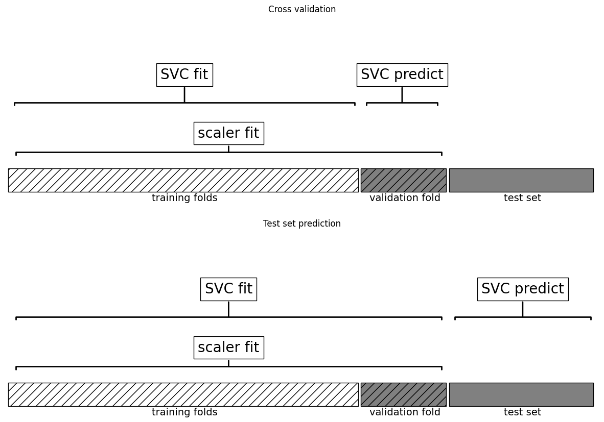
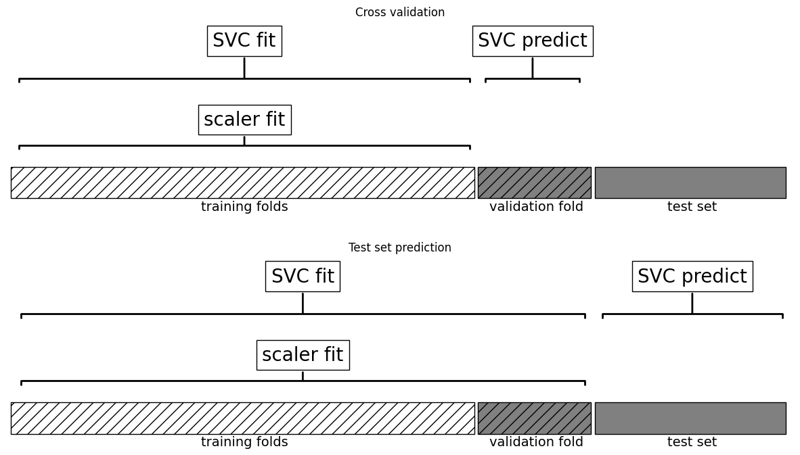
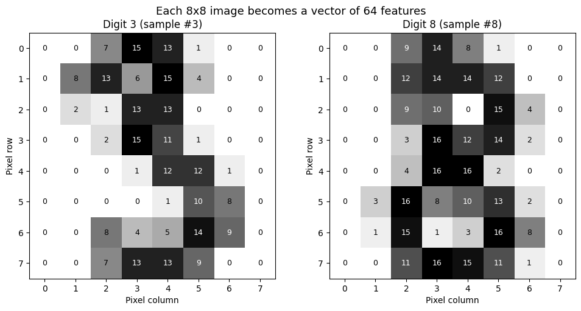
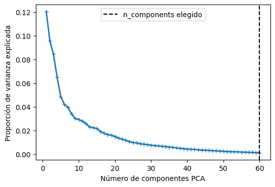
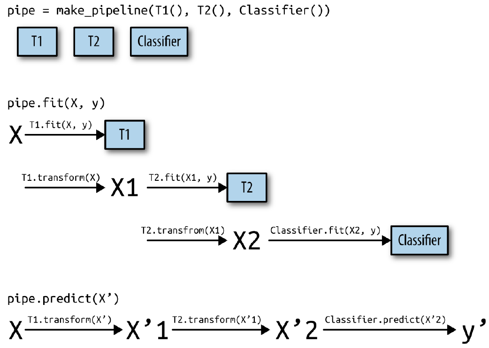
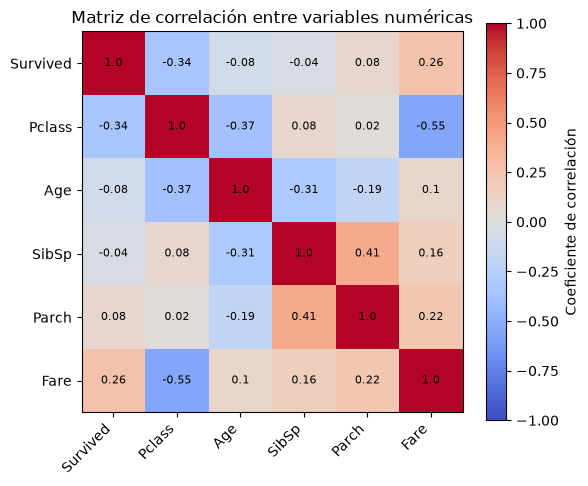
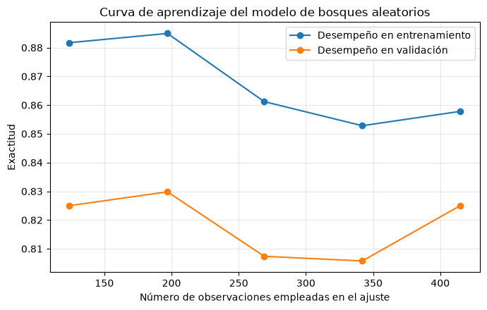

10. Pipelines#
El rendimiento de los algoritmos de aprendizaje automático depende de la representación de los datos, desde el escalado hasta el aprendizaje de características no supervisadas. La mayoría de las aplicaciones requieren encadenar múltiples transformaciones y modelos.
La clase
Pipelinesimplifica este proceso, permitiendo combinar pasos de preprocesamiento y modelos en un solo flujo. Además,Pipelinepuede integrarse conGridSearchCVpara optimizar todos los parámetros a la vez. Un ejemplo muestra que el uso deMinMaxScalermejora significativamente el desempeño de unSVMen el conjunto de datoscancer.
import numpy as np
from sklearn.linear_model import LogisticRegression
from sklearn.model_selection import train_test_split
from sklearn.preprocessing import StandardScaler
from sklearn.metrics import roc_auc_score
np.random.seed(0)
n = 1000
X = np.random.rand(n, 5)
y = np.random.randint(0, 2, size=n)
leaky_feature = y + np.random.normal(0, 0.001, size=n)
X_with_leak = np.hstack([X, leaky_feature.reshape(-1, 1)])
Primer intento usando el modelo de clasificación
LogisticRegression()
scaler = StandardScaler().fit(X_with_leak)
X_scaled = scaler.transform(X_with_leak)
X_train, X_test, y_train, y_test = train_test_split(X_scaled, y, test_size=0.3, random_state=42)
model = LogisticRegression()
model.fit(X_train, y_train)
y_scores = model.predict_proba(X_test)[:, 1]
print("AUC con data leakage: {:.3f}".format(roc_auc_score(y_test, y_scores)))
AUC con data leakage: 1.000
Segundo intento usando el modelo de clasificación
LogisticRegression()
X_clean = X
X_train, X_test, y_train, y_test = train_test_split(X_clean, y, test_size=0.3, random_state=42)
scaler = StandardScaler().fit(X_train)
X_train_scaled = scaler.transform(X_train)
X_test_scaled = scaler.transform(X_test)
model = LogisticRegression()
model.fit(X_train_scaled, y_train)
y_scores = model.predict_proba(X_test_scaled)[:, 1]
print("AUC sin data leakage: {:.3f}".format(roc_auc_score(y_test, y_scores)))
AUC sin data leakage: 0.499
10.1. Selección de parámetros con preprocesamiento#
Ahora digamos que queremos encontrar mejores parámetros para el
SVCusandoGridSearchCV, como se ha discutido en secciones anteriores. ¿Cómo podemos hacerlo? Un enfoque ingenuo podría ser el siguiente
import numpy as np
from sklearn.svm import SVC
from sklearn.pipeline import Pipeline
from sklearn.model_selection import train_test_split, GridSearchCV
from sklearn.preprocessing import MinMaxScaler
from sklearn.metrics import roc_auc_score
np.random.seed(0)
n = 1000
X = np.random.rand(n, 5)
y = np.random.randint(0, 2, size=n)
leaky_feature = y + np.random.normal(0, 0.001, size=n)
X_with_leak = np.hstack([X, leaky_feature.reshape(-1, 1)])
X_train, X_test, y_train, y_test = train_test_split(
X_with_leak, y, test_size=0.3, random_state=42
)
scaler = MinMaxScaler().fit(X_train)
X_train_scaled = scaler.transform(X_train)
X_test_scaled = scaler.transform(X_test)
param_grid = {
'C': [0.01, 0.1, 1, 10, 100],
'gamma': [0.01, 0.1, 1, 10, 100]
}
grid_leak = GridSearchCV(SVC(probability=True), param_grid=param_grid, cv=5, scoring="roc_auc")
grid_leak.fit(X_train_scaled, y_train)
y_scores_leak = grid_leak.predict_proba(X_test_scaled)[:, 1]
auc_leak = roc_auc_score(y_test, y_scores_leak)
print("AUC con data leakage (sin pipeline): {:.3f}".format(auc_leak))
print("Mejores parámetros (con leakage):", grid_leak.best_params_)
AUC con data leakage (sin pipeline): 1.000
Mejores parámetros (con leakage): {'C': 0.01, 'gamma': 0.01}
Se realiza una búsqueda en red (
grid-search) sobre los parámetros deSVCutilizando los datos escalados. Al escalar, se usa todo el conjunto de entrenamiento, y los datos escalados se emplean en la búsqueda en red con validación cruzada (cv=5). En cada división, una parte del conjunto de entrenamiento se usa para entrenar y otra para evaluar, simulando cómo el modelo clasificaría nuevos datos.Es clave notar que, en la validación cruzada, la parte de prueba sigue perteneciendo al conjunto de entrenamiento y el escalado se calcula con todos los datos de entrenamiento. Sin embargo, en la evaluación final con datos nuevos, estos pueden tener un mínimo y un máximo diferentes, afectando el escalado. El siguiente ejemplo ilustra este proceso en la validación cruzada y la evaluación final.
import mglearn
mglearn.plots.plot_improper_processing()

La validación cruzada puede dar resultados demasiado optimistas si se filtra información antes de la división de los datos, lo que puede llevar a la selección de parámetros subóptimos. Para evitarlo, la división debe hacerse antes del preprocesamiento, asegurando que cualquier conocimiento extraído solo afecte el conjunto de entrenamiento. La validación cruzada debe ser el “bucle más externo” del proceso.
En
scikit-learn, esto se maneja conPipeline, que permite combinar varios pasos de preprocesamiento y modelado en un solo estimador.Pipelinefacilita el ajuste, la predicción y la evaluación, integrando transformaciones como el escalado junto con modelos supervisados.
Observacion
La fuga de datos ocurre cuando el modelo usa información ajena al conjunto de entrenamiento, afectando su evaluación. Si hay datos compartidos entre entrenamiento y prueba, los resultados pueden ser artificialmente altos, ya que el modelo ha sido expuesto previamente a los datos de prueba.
10.2. Construyendo Pipelines with GridSearch#
El impacto de la fuga de información en la validación cruzada depende del preprocesamiento. La estimación de escala en el pliegue de prueba tiene un impacto menor, pero usarlo en la extracción o selección de características puede distorsionar significativamente los resultados.
A diferencia de la búsqueda en red que hicimos antes, ahora para cada división en la validación cruzada, el
MinMaxScalerse reajusta solo con las divisiones de entrenamiento y no se filtra información de la división de prueba en la búsqueda de parámetros`
mglearn.plots.plot_proper_processing()

Veamos cómo podemos utilizar la clase
Pipelinepara expresar el flujo de trabajo para entrenar unaSVMdespués de escalar los datos conMinMaxScaler(por ahora sin grid-search). Primero, construimos un objeto pipeline proporcionándole una lista de pasos. Cada paso es una tupla que contiene un nombre (cualquier cadena de su elección) y una instancia de un estimadorEl uso de
PipelineenGridSearchCVes como con cualquier estimador: se define un diccionario de parámetros donde cada clave indica el paso y el parámetro usando doble guión bajo, por ejemplo,"svm__C"y"svm__gamma"si el modeloSVCse llama"svm"en elpipeline.
pipe = Pipeline([
("scaler", MinMaxScaler()),
("svm", SVC(probability=True))
])
param_grid_pipe = {
'svm__C': [0.01, 0.1, 1, 10, 100],
'svm__gamma': [0.01, 0.1, 1, 10, 100]
}
grid_pipe = GridSearchCV(pipe, param_grid=param_grid_pipe, cv=5, scoring="roc_auc")
grid_pipe.fit(X_train, y_train)
GridSearchCV(cv=5,
estimator=Pipeline(steps=[('scaler', MinMaxScaler()),
('svm', SVC(probability=True))]),
param_grid={'svm__C': [0.01, 0.1, 1, 10, 100],
'svm__gamma': [0.01, 0.1, 1, 10, 100]},
scoring='roc_auc')In a Jupyter environment, please rerun this cell to show the HTML representation or trust the notebook. On GitHub, the HTML representation is unable to render, please try loading this page with nbviewer.org.
GridSearchCV(cv=5,
estimator=Pipeline(steps=[('scaler', MinMaxScaler()),
('svm', SVC(probability=True))]),
param_grid={'svm__C': [0.01, 0.1, 1, 10, 100],
'svm__gamma': [0.01, 0.1, 1, 10, 100]},
scoring='roc_auc')Pipeline(steps=[('scaler', MinMaxScaler()), ('svm', SVC(probability=True))])MinMaxScaler()
SVC(probability=True)
En el paso anterior, hemos creado dos pasos: el primero, llamado
"scaler", es una instancia de MinMaxScaler y el segundo, llamado"svm", es una instancia de SVC. Ahora, podemos ajustar nuestro pipeline, como cualquier otro estimador descikit-learn.grid_pipe.fitprimero llama afiten el primer paso (el escalador), luego transforma los datos de entrenamiento usando el escalador, y finalmente ajusta laSVMcon los datos escalados. Para evaluar en los datos de prueba, simplemente llamamos agrid_pipe.predict_proba
y_scores_pipe = grid_pipe.predict_proba(X_test)[:, 1]
auc_pipe = roc_auc_score(y_test, y_scores_pipe)
print("AUC sin data leakage (con pipeline): {:.3f}".format(auc_pipe))
print("Mejores parámetros (sin leakage):", grid_pipe.best_params_)
AUC sin data leakage (con pipeline): 0.500
Mejores parámetros (sin leakage): {'svm__C': 0.01, 'svm__gamma': 0.01}
El impacto de la fuga de información en la validación cruzada depende del preprocesamiento. La estimación de escala en el pliegue de prueba tiene un impacto menor, pero usarlo en la extracción o selección de características puede distorsionar significativamente los resultados.
10.3. Data Leakage#
La fuga de datos (data-leakage) ocurre cuando se utiliza información no disponible en el momento de la predicción, lo que produce estimaciones optimistas y un bajo rendimiento en producción. Suele originarse por una separación incorrecta entre entrenamiento y prueba, permitiendo que el modelo acceda, directa o indirectamente, a datos reservados.
Las transformaciones de preprocesamiento, como la normalización o la selección de características, deben ajustarse exclusivamente con los datos de entrenamiento; incluir los de prueba introduce sesgo. Esta situación se ilustrará mediante un problema de clasificación binaria con 10,000 características aleatorias.
import numpy as np
n_samples, n_features, n_classes = 200, 10000, 2
rng = np.random.RandomState(42)
X = rng.standard_normal((n_samples, n_features))
y = rng.choice(n_classes, n_samples)
Forma incorrecta
El uso de todos los datos para la selección de características genera una precisión artificialmente alta, incluso cuando
Xeyson independientes, lo que debería dar una precisión cercana a 0.5. Esto ocurre porque la selección de características “ve” los datos de prueba, otorgando una ventaja injusta.En el enfoque incorrecto, se seleccionan características antes de dividir los datos, lo que infla la precisión del modelo.
SelectKBestelige laskmejores características según una función de puntuación(X, y), reteniendo aquellas con mayor relación cony. Si se usachi2, se evalúa la dependencia entre cada característica ey: valores bajos indican independencia, valores altos sugieren relación no aleatoria. Por defecto,SelectKBestempleaf_regression F-valuepara medir la relevancia de cada característica.
from sklearn.model_selection import train_test_split
from sklearn.feature_selection import SelectKBest
from sklearn.ensemble import GradientBoostingClassifier
from sklearn.metrics import accuracy_score
Preprocesamiento incorrecto: se transforman todos los datos
X_selected = SelectKBest(k=25).fit_transform(X, y) #(Dependencia entre cada X[:,i] e y.) -> Reg: F de ANOVA o Class: Chi-cuadrado
X_train, X_test, y_train, y_test = train_test_split(X_selected, y, random_state=42)
gbc = GradientBoostingClassifier(random_state=1)
gbc.fit(X_train, y_train)
y_pred = gbc.predict(X_test)
accuracy_score(y_test, y_pred)
0.76
Forma correcta
Para evitar la fuga de datos, primero se deben dividir los datos en entrenamiento y prueba. La selección de características debe realizarse solo con el conjunto de entrenamiento. Al usar
fitofit_transform, se aplica exclusivamente al entrenamiento. Esto garantiza que la puntuación refleje el desempeño real del modelo.
X_train, X_test, y_train, y_test = train_test_split(X, y, random_state=42)
select = SelectKBest(k=25)
X_train_selected = select.fit_transform(X_train, y_train)
gbc = GradientBoostingClassifier(random_state=1)
gbc.fit(X_train_selected, y_train)
X_test_selected = select.transform(X_test)
y_pred = gbc.predict(X_test_selected)
accuracy_score(y_test, y_pred)
0.46
Se recomienda usar un pipeline para encadenar la selección de características y los estimadores, asegurando que solo los datos de entrenamiento se usen en el ajuste y los de prueba solo para evaluar la precisión.
from sklearn.pipeline import make_pipeline
X_train, X_test, y_train, y_test = train_test_split(X, y, random_state=42)
pipeline = make_pipeline(SelectKBest(k=25), GradientBoostingClassifier(random_state=1))
pipeline.fit(X_train, y_train)
y_pred = pipeline.predict(X_test)
accuracy_score(y_test, y_pred)
0.46
10.4. Ilustración de la fuga de datos#
Un ejemplo clásico de fuga de información en validación cruzada se encuentra en The Elements of Statistical Learning de Hastie, Tibshirani y Friedman. Reproducimos una versión adaptada: en una tarea de regresión sintética con 100 muestras y 1.000 características, todas se generan de una distribución gaussiana independiente, al igual que la variable respuesta.
import numpy as np
rnd = np.random.RandomState(seed=0)
X = rnd.normal(size=(100, 10000))
y = rnd.normal(size=(100,))
No hay relación entre los datos \(X\) y el objetivo \(y\) (son independientes), por lo que no debería ser posible aprender nada del conjunto. Se selecciona la característica más informativa con
SelectPercentile(elige variables en el percentil más alto de scores) y se evalúa un regresorRidgemediante validación cruzada.
from sklearn.feature_selection import SelectPercentile, f_regression
select = SelectPercentile(score_func=f_regression, percentile=5).fit(X, y)
X_selected = select.transform(X)
print("X_selected.shape: {}".format(X_selected.shape))
X_selected.shape: (100, 500)
from sklearn.model_selection import cross_val_score
from sklearn.linear_model import Ridge
cross_val_score(Ridge(), X_selected, y, cv=5)
array([0.84834054, 0.94084243, 0.88541709, 0.94012139, 0.91425508])
print("Cross-validation accuracy (cv only on ridge): {:.2f}".format(np.mean(cross_val_score(Ridge(), X_selected, y, cv=5))))
Cross-validation accuracy (cv only on ridge): 0.91
El score de validación cruzada es 0.91, lo que sugiere un modelo excelente, pero esto es erróneo, ya que los datos son aleatorios. La selección de características eligió, por azar, algunas altamente correlacionadas con el objetivo. Como la selección ocurrió fuera de la validación cruzada, filtró información de los pliegues de prueba, generando resultados poco realistas. Para evitar esto, es necesario aplicar una validación cruzada adecuada con una tubería.
pipe = Pipeline([("select", SelectPercentile(score_func=f_regression, percentile=5)),
("ridge", Ridge())])
cross_val_score(pipe, X, y, cv=5)
array([-0.97502994, -0.03166358, -0.03989415, 0.03018385, -0.2163673 ])
print("Cross-validation accuracy (pipeline): {:.2f}".format(np.mean(cross_val_score(pipe, X, y, cv=5))))
Cross-validation accuracy (pipeline): -0.25
La API de scoring siempre maximiza la puntuación. Por ello, las métricas a minimizar (como MSE) se devuelven en negativo, mientras que las que deben maximizarse se mantienen en positivo.
Pipeline garantiza que la selección de características ocurra dentro de la validación cruzada, evitando la fuga de datos. Esto impide que el modelo seleccione características basadas en información del conjunto de prueba, lo que podría generar resultados engañosos.
10.5. Reduccción de dimensionalidad en el Pipeline#
En tareas de aprendizaje supervisado con datos de alta dimensionalidad, la reducción de dimensionalidad puede ser fundamental para mejorar la eficiencia computacional y evitar el sobreajuste. Una técnica habitual es la aplicación de PCA (Análisis de Componentes Principales) como paso previo al modelado. Para evitar data leakage, estas transformaciones deben integrarse correctamente en un flujo de trabajo reproducible.
A continuación, se muestra un ejemplo con el conjunto de datos
digitsdonde se implementa unPipelineque incluye:Estandarización (
StandardScaler),Reducción de dimensionalidad (
PCA),Clasificación (
KNeighborsClassifier),
junto con una búsqueda de hiperparámetros usando
GridSearchCV.
digitos_a_mostrar = [3, 8]
fig, axes = plt.subplots(1, 2, figsize=(10, 5))
for ax, d in zip(axes, digitos_a_mostrar):
idx = np.where(y_digits == d)[0][0]
img = X_digits[idx].reshape(8, 8)
ax.imshow(img, cmap="gray_r")
for i in range(8):
for j in range(8):
color_texto = "white" if img[i, j] > 8 else "black"
ax.text(j, i, int(img[i, j]), ha="center", va="center",
color=color_texto, fontsize=9)
ax.set_title(f"Digit {d} (sample #{idx})")
ax.set_xticks(range(8))
ax.set_yticks(range(8))
ax.set_xlabel("Pixel column")
ax.set_ylabel("Pixel row")
fig.suptitle("Each 8x8 image becomes a vector of 64 features", fontsize=13)
plt.tight_layout()
plt.show()

from sklearn.decomposition import PCA
from sklearn.neighbors import KNeighborsClassifier
from sklearn.pipeline import Pipeline
from sklearn.model_selection import GridSearchCV
from sklearn.preprocessing import StandardScaler
from sklearn import datasets
import numpy as np
import matplotlib.pyplot as plt
# ==============================
# 1. Datos de ejemplo
# ==============================
X_digits, y_digits = datasets.load_digits(return_X_y=True)
# Cantidad de muestras, columnas (features) y clases
n_muestras, n_features = X_digits.shape
print(f"Número de muestras: {n_muestras}")
print(f"Número de columnas (features): {n_features} (imágenes de 8x8 píxeles)")
print(f"Número de clases: {len(np.unique(y_digits))}")
# Columnas constantes (píxeles siempre en 0): no aportan varianza al PCA
n_constantes = int(np.sum(X_digits.std(axis=0) == 0))
print(f"Columnas constantes: {n_constantes} -> rango efectivo de los datos: {n_features - n_constantes}")
# ==============================
# 2. Definimos el pipeline
# ==============================
pipe = Pipeline(steps=[
("scaler", StandardScaler()),
("pca", PCA()),
("knn", KNeighborsClassifier())
])
# ==============================
# 3. Parámetros para GridSearchCV
# ==============================
# PCA no admite más componentes que min(n_muestras_de_entrenamiento, n_features).
# Aquí el máximo es n_features = 64, que equivale a conservar todas las componentes.
param_grid = {
"pca__n_components": [2, 5, 10, 15, 20, 30, 40, 50, 60, n_features],
"knn__n_neighbors": [3, 5, 7, 9],
"knn__weights": ["uniform", "distance"]
}
# ==============================
# 4. Búsqueda de hiperparámetros
# ==============================
search = GridSearchCV(pipe, param_grid, n_jobs=-1)
search.fit(X_digits, y_digits)
print(f"\nMejor puntuación CV: {search.best_score_:.3f}")
print("Mejores parámetros encontrados:", search.best_params_)
# ==============================
# 5. Extraer PCA y modelo final
# ==============================
best_pca = search.best_estimator_.named_steps["pca"]
# Varianza explicada en proporción
varianza = best_pca.explained_variance_ratio_
# Mostrar las 10 componentes más importantes según PCA
top10 = np.argsort(varianza)[::-1][:10]
print("\nTop 10 componentes PCA por varianza explicada:")
for i in top10:
print(f"Componente {i+1}: {varianza[i]:.4f}")
# ==============================
# 6. Visualización del espectro PCA
# ==============================
plt.figure(figsize=(6, 4))
plt.plot(np.arange(1, best_pca.n_components_ + 1),
varianza, marker="+", linewidth=2)
plt.axvline(search.best_estimator_.named_steps["pca"].n_components,
color='k', linestyle='--', label="n_components elegido")
plt.ylabel("Proporción de varianza explicada")
plt.xlabel("Número de componentes PCA")
plt.legend()
plt.show()
Número de muestras: 1797
Número de columnas (features): 64 (imágenes de 8x8 píxeles)
Número de clases: 10
Columnas constantes: 3 -> rango efectivo de los datos: 61
Mejor puntuación CV: 0.948
Mejores parámetros encontrados: {'knn__n_neighbors': 3, 'knn__weights': 'distance', 'pca__n_components': 60}
Top 10 componentes PCA por varianza explicada:
Componente 1: 0.1203
Componente 2: 0.0956
Componente 3: 0.0844
Componente 4: 0.0650
Componente 5: 0.0486
Componente 6: 0.0421
Componente 7: 0.0394
Componente 8: 0.0339
Componente 9: 0.0300
Componente 10: 0.0293

Observación
Cuando se entrena un pipeline \(\textsf{StandardScaler}() \Longrightarrow \textsf{PCA}() \Longrightarrow \textsf{KNeighborsClassifier}()\) de la siguiente forma:
pipeline.fit(X_train, y_train)
Ocurre lo siguiente en orden:
Paso PCA:
El PCA calculó las componentes principales usando
X_train.Se quedó con las primeras 60 (por ejemplo) y guardó la matriz de proyección.
Paso KNN:
Recibió las proyecciones reducidas de
X_train(60 columnas en vez de miles).Guardó la posición de cada punto de entrenamiento en ese nuevo espacio.
No aprendió “coeficientes”, solo almacenó los puntos (porque KNN es un algoritmo de memoria).
Cuando llega un nuevo dataset de test
y_pred = pipeline.predict(X_test)
El pipeline hace automáticamente las mismas transformaciones que usó en entrenamiento, pero sin volver a recalcular nada:
Paso PCA:
Aplica la misma proyección aprendida con
X_trainpara transformarX_test. Es decir, no vuelve a buscar nuevas componentes, usa las mismas 60 direcciones ya aprendidas.Resta la misma media que usó con
X_train. ProyectaX_testsobre las mismas 60 direcciones que aprendió antes.Esto asegura que
X_testquede en el mismo espacio de características queX_train.
Paso KNN:
Calcula la distancia entre cada punto transformado de
X_testy todos los puntos deX_trainen ese espacio reducido.Busca los k vecinos más cercanos y asigna la clase según
weights:"uniform"→ todos los vecinos pesan igual."distance"→ vecinos más cercanos pesan más en la votación.
10.6. La interfaz general del Pipeline#
La clase
Pipelineno se limita al preprocesamiento y la clasificación, sino que puede combinar múltiples estimadores, como extracción de características, selección, escalado y clasificación, en una secuencia de pasos. También puede incluir regresión o agrupación en lugar de clasificación. El único requisito es que todos los pasos, excepto el último, deben tener un métodotransformpara encadenar su salida con el siguiente paso.Durante
Pipeline.fit, cada paso aplicafitytransform, excepto el último, que solo usafit. Internamente, la tubería ejecuta los métodos en secuencia, conpipeline.steps[i][1]representando cada estimador en la lista de pasos.
def fit(self, X, y):
X_transformed = X
for name, estimator in self.steps[:-1]:
# Iterar sobre todo excepto el último paso
# Ajustar y transformar los datos
X_transformed = estimator.fit_transform(X_transformed, y)
# Ajuste en el último paso
self.steps[-1][1].fit(X_transformed, y)
return self
Cuando se predice utilizando
Pipeline, transformamos los datos de forma similar utilizando todos los pasos menos el último paso, y luego llamamos apredicten el último paso
def predict(self, X):
X_transformed = X
for step in self.steps[:-1]:
# Iterar sobre todo excepto el último paso
# Ajustar y transformar los datos
X_transformed = step[1].transform(X_transformed)
# Ajuste en el último paso
return self.steps[-1][1].predict(X_transformed)
El proceso se ilustra en la Fig. 10.1 para dos transformadores,
T1,T2, y unclassifier(llamadoClassifier)


Fig. 10.1 Visión general del proceso de entrenamiento y predicción de la tubería.#
Un
Pipelinees más general de lo que parece: no es necesario que el último paso incluya un modelo con función de predicción. Puede componerse solo de transformaciones, como un escalador seguido de un PCA. En ese caso, si el último paso tiene un métodotransform, elPipelinetambién podrá aplicartransformtras procesar los datos en cada etapa previa. Lo único indispensable es que el paso final tenga un métodofit.
10.7. Creación cómoda de pipelines con make_pipeline#
La creación de un
Pipelineutilizando la sintaxis descrita anteriormente es a veces un poco engorrosa, y a menudo no necesitamos nombres especificados por el usuario para cada paso. Existe una función convenientemake_pipeline, que creará una tubería por nosotros y nombrará automáticamente cada paso basándose en su clase. La sintaxis demake_pipelinees la siguiente
from sklearn.pipeline import make_pipeline
pipe_long = Pipeline([("scaler", MinMaxScaler()), ("svm", SVC(C=100))])
pipe_short = make_pipeline(MinMaxScaler(), SVC(C=100))
Los objetos pipeline
pipe_longypipe_shorthacen exactamente lo mismo, peropipe_shorttiene pasos que fueron nombrados automáticamente. Podemos ver los nombres de los pasos mirando el atributosteps
print("Pipeline steps:\n{}".format(pipe_short.steps))
Pipeline steps:
[('minmaxscaler', MinMaxScaler()), ('svc', SVC(C=100))]
Los pasos se denominan
minmaxscalerysvc. En general, los nombres de los pasos son sólo versiones de los nombres de las clases. Si varios pasos tienen la misma clase, se añade un número
from sklearn.preprocessing import StandardScaler
from sklearn.decomposition import PCA
pipe = make_pipeline(StandardScaler(), PCA(n_components=2), StandardScaler())
print("Pipeline steps:\n{}".format(pipe.steps))
Pipeline steps:
[('standardscaler-1', StandardScaler()), ('pca', PCA(n_components=2)), ('standardscaler-2', StandardScaler())]
Como puede ver, el primer paso de
StandardScalerllamóstandardscaler-1y el segundostandardscaler-2. Sin embargo, en este tipo de configuraciones podría ser mejor utilizar la construcción de tuberías con nombres explícitos, para dar nombres más semánticos a cada paso
Para inspeccionar atributos de pasos en un
Pipeline, como coeficientes de un modelo o componentes dePCAse utiliza el atributonamed_steps, un diccionario que vincula nombres de pasos con sus estimadores. Tras ajustar elpipeline, se pueden extraer, por ejemplo, las dos primeras componentes principales del pasopcaaplicado al conjunto de datoscancer.
from sklearn.datasets import load_breast_cancer
cancer = load_breast_cancer()
X = cancer.data
y = cancer.target
pipe.fit(X, y)
components = pipe.named_steps["pca"].components_
print("components.shape: {}".format(components.shape))
components.shape: (2, 30)
10.8. Acceso a los atributos en un Pipeline con GridSearch#
Como hemos comentado anteriormente en este capítulo, una de las principales razones para utilizar
pipelines, es para realizar búsquedas en la red. Una tarea común es acceder a algunos de los pasos de una tubería dentro de dentro de una búsqueda en red.Busquemos en la red un clasificador
LogisticRegressionen el conjunto de datoscancer, utilizandoPipeline. UsamosStandardScaler, para escalar los datos antes de pasarlos al clasificadorLogisticRegresión. Primero creamos una instancia de nuestropipelineusando la funciónmake_pipeline.
from sklearn.linear_model import LogisticRegression
pipe = make_pipeline(StandardScaler(), LogisticRegression(max_iter=1000))
A continuación, creamos un grid de parámetros. Como se explica en la sección anterior, el parámetro de regularización para
LogisticRegressiones el parámetroC. Utilizamos una red logarítmica para este parámetro, buscando entre 0.01 y 100.Como utilizamos la función
make_pipeline, el nombre del pasoLogisticRegressionen elpipelinees el nombre de la clase en minúsculas,logisticregression. Para afinar el parámetroC, tenemos que especificar una red de parámetros paralogisticregression__C
param_grid = {'logisticregression__C': [0.01, 0.1, 1, 10, 100]}
Como es habitual, dividimos el conjunto de datos
canceren conjuntos de entrenamiento y de prueba, y ajustamos una búsqueda en red
X_train, X_test, y_train, y_test = train_test_split(cancer.data, cancer.target, random_state=4)
grid = GridSearchCV(pipe, param_grid, cv=5)
grid.fit(X_train, y_train)
GridSearchCV(cv=5,
estimator=Pipeline(steps=[('standardscaler', StandardScaler()),
('logisticregression',
LogisticRegression(max_iter=1000))]),
param_grid={'logisticregression__C': [0.01, 0.1, 1, 10, 100]})In a Jupyter environment, please rerun this cell to show the HTML representation or trust the notebook. On GitHub, the HTML representation is unable to render, please try loading this page with nbviewer.org.
GridSearchCV(cv=5,
estimator=Pipeline(steps=[('standardscaler', StandardScaler()),
('logisticregression',
LogisticRegression(max_iter=1000))]),
param_grid={'logisticregression__C': [0.01, 0.1, 1, 10, 100]})Pipeline(steps=[('standardscaler', StandardScaler()),
('logisticregression', LogisticRegression(max_iter=1000))])StandardScaler()
LogisticRegression(max_iter=1000)
Entonces, ¿cómo accedemos a los coeficientes del mejor modelo
LogisticRegressionque fue encontrado porGridSearchCV? De los capítulos anteriores sabemos que el mejor modelo encontrado porGridSearchCV, entrenado con todos los datos de entrenamiento, se almacena engrid.best_estimator_
print("Best estimator:\n{}".format(grid.best_estimator_))
Best estimator:
Pipeline(steps=[('standardscaler', StandardScaler()),
('logisticregression', LogisticRegression(C=1, max_iter=1000))])
Este
best_estimator_en nuestro caso es unpipelinecon dos pasos,standardcalerylogisticregression. Para acceder al paso delogisticregression, podemos utilizar el atributonamed_stepsde la tubería, como se ha explicado anteriormente
print("Logistic regression step:\n{}".format(grid.best_estimator_.named_steps["logisticregression"]))
Logistic regression step:
LogisticRegression(C=1, max_iter=1000)
Ahora que tenemos la instancia de
LogisticRegressionentrenada, podemos acceder a los coeficientes (pesos) asociados a cada característica de entrada. Para mas información sobre los parámetros que podemos visualizar de este modelo clasificador (ver LogisticRegression). En este caso visualizaremos sus coeficientes usando.coef_. Puede que sea una expresión algo larga, pero a menudo resulta útil para entender los modelos.
print("Logistic regression coefficients:\n{}".format(grid.best_estimator_.named_steps["logisticregression"].coef_))
Logistic regression coefficients:
[[-0.43570655 -0.34266946 -0.40809443 -0.5344574 -0.14971847 0.61034122
-0.72634347 -0.78538827 0.03886087 0.27497198 -1.29780109 0.04926005
-0.67336941 -0.93447426 -0.13939555 0.45032641 -0.13009864 -0.10144273
0.43432027 0.71596578 -1.09068862 -1.09463976 -0.85183755 -1.06406198
-0.74316099 0.07252425 -0.82323903 -0.65321239 -0.64379499 -0.42026013]]
10.9. Grid-Searching: ¿Qué modelo usar?#
GridSearchCVpuede combinarse conPipelinepara optimizar a la vez los hiperparámetros y los pasos de preprocesamiento (por ejemplo,StandardScaleroMinMaxScaler), aunque esto amplía el espacio de búsqueda y debe usarse con cautela.Al comparar
SVCyRandomForestClassifier, se evalúa siSVCmejora con escalado, mientras queRandomForestno lo requiere. Por eso cada modelo se define en un diccionario junto con su propia malla de parámetros:SVC: se construye conmake_pipeline(StandardScaler(), SVC()), que nombra los pasos automáticamente a partir de la clase, y su malla usasvc__Cysvc__gamma.RandomForest: se pasa directamente el estimador, sinPipelineni paso de preprocesamiento (niNoneni'passthrough'), y su malla exploramax_features("sqrt","log2",0.5) yn_estimators.
Se ejecuta un
GridSearchCVindependiente por modelo sobre el conjuntocancer, con una partición estratificada y una validación cruzadaStratifiedKFold(shuffle=True, random_state=0)para que la evaluación sea reproducible. Esta estrategia evita el estimador de relleno, mantiene mallas separadas y no mezcla en un mismobest_params_claves de modelos distintos.El modelo ganador se elige con
best_score_(validación cruzada) y el conjunto de prueba se evalúa una sola vez, al final, para conservar una estimación honesta. Comobest_score_es ligeramente optimista por seleccionar el máximo entre muchas combinaciones, la validación cruzada anidada es la alternativa cuando se requiere una estimación insesgada.
from sklearn.datasets import load_breast_cancer
from sklearn.pipeline import make_pipeline
from sklearn.preprocessing import StandardScaler
from sklearn.svm import SVC
from sklearn.ensemble import RandomForestClassifier
from sklearn.model_selection import GridSearchCV, StratifiedKFold, train_test_split
X, y = load_breast_cancer(return_X_y=True)
X_train, X_test, y_train, y_test = train_test_split(
X, y, stratify=y, random_state=0
)
cv = StratifiedKFold(n_splits=5, shuffle=True, random_state=0)
modelos = {
"SVC": (
make_pipeline(StandardScaler(), SVC()),
{"svc__C": [0.1, 1, 10, 100], "svc__gamma": [0.001, 0.01, 0.1, 1]},
),
"RandomForest": (
RandomForestClassifier(random_state=0),
{"max_features": ["sqrt", "log2", 0.5], "n_estimators": [100, 300]},
),
}
resultados = {}
for nombre, (modelo, malla) in modelos.items():
busqueda = GridSearchCV(modelo, malla, cv=cv, scoring="roc_auc", n_jobs=-1)
busqueda.fit(X_train, y_train)
resultados[nombre] = busqueda
print(f"{nombre}: CV={busqueda.best_score_:.3f} | Mejores parámetros: {busqueda.best_params_}")
mejor = max(resultados, key=lambda n: resultados[n].best_score_)
print(f"\nModelo ganador (por CV): {mejor} | Test={resultados[mejor].score(X_test, y_test):.3f}")
SVC: CV=0.997 | Mejores parámetros: {'svc__C': 10, 'svc__gamma': 0.01}
RandomForest: CV=0.996 | Mejores parámetros: {'max_features': 'sqrt', 'n_estimators': 300}
Modelo ganador (por CV): SVC | Test=0.995
La búsqueda en malla mostró que
SVCconStandardScaler,C=10ygamma=0.01fue el mejor modelo, con un AUC ROC de validación cruzada de 0.997, frente a 0.996 delRandomForestClassifier(max_features='sqrt',n_estimators=300).Métrica: se usó
scoring="roc_auc"en lugar de la exactitud, ya que el AUC mide la capacidad de discriminar entre clases sin depender de un umbral de decisión, lo cual es apropiado en un problema clínico.Selección: el modelo ganador se eligió por
best_score_(validación cruzada) y no con el conjunto de prueba.Evaluación final: el
SVCalcanzó un AUC de 0.995 en el conjunto de prueba, evaluado una sola vez.Interpretación: la diferencia entre ambos modelos es de solo 0.001, por lo que en la práctica tienen un desempeño equivalente. La ventaja del
SVCse apoya en el escalado, que este modelo sí requiere y el bosque aleatorio no.
Note
Una diferencia de 0.001 en AUC está dentro del ruido de la partición, así que no permite afirmar que SVC sea superior a RandomForest. Para respaldarlo conviene comparar las desviaciones estándar de los puntajes por pliegue (cv_results_) o repetir la validación cruzada con distintas semillas.
Resumen y conclusiones
La clase
Pipelinepermite encadenar múltiples pasos de procesamiento en un flujo de trabajo de aprendizaje automático, encapsulándolos en un solo objeto que sigue la interfaz descikit-learn(fit,predict,transform). Su uso es clave para una evaluación adecuada mediante validación cruzada y búsqueda en red.Además,
Pipelinesimplifica el código y minimiza errores, como olvidar aplicar transformaciones en el conjunto de prueba o desordenar los pasos. La elección de preprocesamiento y modelos requiere ensayo y error, peroPipelinefacilita la experimentación sin excesiva complejidad.
10.10. Tratamiento de datos categóricos y numéricos: ejemplo Titanic#
Se importan los módulos para partición de datos, pipelines de preprocesamiento, entrenamiento de Random Forest y evaluación de desempeño.
10.10.1. El conjunto de datos Titanic#
Registra información de los pasajeros del RMS Titanic, hundido el 15 de abril de 1912. La variable respuesta, Survived (1 = sobrevivió, 0 = no sobrevivió), se predice a partir de:
Variable |
Descripción |
|---|---|
|
Identificador único |
|
Clase del boleto (1ª, 2ª, 3ª) |
|
Nombre y título honorífico |
|
Sexo del pasajero |
|
Edad en años |
|
Hermanos/cónyuges a bordo |
|
Padres/hijos a bordo |
|
Número de boleto |
|
Tarifa pagada |
|
Camarote |
|
Puerto de embarque (C, Q, S) |
Este dataset combina variables numéricas y categóricas, tiene valores faltantes desiguales entre variables, y presenta interacciones no aditivas (Sex × Pclass), patrones que un Random Forest captura de forma natural mediante particiones sucesivas del espacio de variables.
import numpy as np
import pandas as pd
from sklearn.model_selection import (
train_test_split, GridSearchCV, StratifiedKFold,
cross_validate, learning_curve, permutation_test_score
)
from sklearn.compose import ColumnTransformer
from sklearn.pipeline import Pipeline
from sklearn.preprocessing import OneHotEncoder, StandardScaler
from sklearn.impute import SimpleImputer
from sklearn.ensemble import RandomForestClassifier
from sklearn.metrics import accuracy_score, roc_auc_score, classification_report
import matplotlib.pyplot as plt
RANDOM_STATE = 101
10.11. Carga de datos#
El archivo test_titanic.csv no contiene la variable Survived, por lo que no puede usarse como conjunto de validación supervisada (no hay forma de calcular métricas de desempeño sobre él). Por ello, se genera un único split interno con train_test_split a partir de train_titanic.csv, que permite estimar de forma confiable la capacidad de generalización del modelo.
train_data = pd.read_csv('https://raw.githubusercontent.com/lihkir/Data/main/train_titanic.csv')
print("Dimensiones del conjunto de entrenamiento:", train_data.shape)
train_data.head()
Dimensiones del conjunto de entrenamiento: (891, 12)
| PassengerId | Survived | Pclass | Name | Sex | Age | SibSp | Parch | Ticket | Fare | Cabin | Embarked | |
|---|---|---|---|---|---|---|---|---|---|---|---|---|
| 0 | 1 | 0 | 3 | Braund, Mr. Owen Harris | male | 22.0 | 1 | 0 | A/5 21171 | 7.2500 | NaN | S |
| 1 | 2 | 1 | 1 | Cumings, Mrs. John Bradley (Florence Briggs Th... | female | 38.0 | 1 | 0 | PC 17599 | 71.2833 | C85 | C |
| 2 | 3 | 1 | 3 | Heikkinen, Miss. Laina | female | 26.0 | 0 | 0 | STON/O2. 3101282 | 7.9250 | NaN | S |
| 3 | 4 | 1 | 1 | Futrelle, Mrs. Jacques Heath (Lily May Peel) | female | 35.0 | 1 | 0 | 113803 | 53.1000 | C123 | S |
| 4 | 5 | 0 | 3 | Allen, Mr. William Henry | male | 35.0 | 0 | 0 | 373450 | 8.0500 | NaN | S |
Aunque este documento no se centra en el EDA, se revisa de forma breve un conjunto reducido de patrones relevantes para el Random Forest, con el fin de justificar las decisiones de preprocesamiento posteriores. En concreto, interesa: (1) proporción de valores faltantes por variable, (2) asociación entre predictores y la variable respuesta, y (3) relaciones no lineales entre predictores, que un modelo de árboles aprovecha mejor que un modelo lineal o probabilístico.
print("Dimensión del conjunto de entrenamiento:", train_data.shape)
# --- Tabla de valores faltantes
faltantes = (train_data.isna().mean() * 100).round(1).sort_values(ascending=False)
faltantes = faltantes[faltantes > 0].to_frame(name="Porcentaje faltante (%)")
tabla_faltantes = faltantes.style.bar(
subset=["Porcentaje faltante (%)"], color="#c0392b", vmin=0, vmax=100
).format("{:.1f}").set_caption("Proporción de valores faltantes por variable")
tabla_faltantes
Dimensión del conjunto de entrenamiento: (891, 12)
| Porcentaje faltante (%) | |
|---|---|
| Cabin | 77.1 |
| Age | 19.9 |
| Embarked | 0.2 |
# --- Tabla de distribución de la variable respuesta (Survived)
dist_survived = (train_data['Survived'].value_counts(normalize=True) * 100).round(1)
dist_survived = dist_survived.rename(index={0: "No sobrevivió", 1: "Sobrevivió"}).to_frame(name="Porcentaje (%)")
tabla_survived = dist_survived.style.bar(
subset=["Porcentaje (%)"], color="#2ecc71", vmin=0, vmax=100
).format("{:.1f}").set_caption("Distribución de la variable respuesta (Survived)")
tabla_survived
| Porcentaje (%) | |
|---|---|
| Survived | |
| No sobrevivió | 61.6 |
| Sobrevivió | 38.4 |
Los valores faltantes se concentran en Cabin, Age y Embarked, en proporciones muy distintas: esto confirma descartar Cabin (alta ausencia) e imputar Age y Embarked dentro del pipeline. Además, Survived muestra un desbalance moderado (~62% no supervivientes), lo que justifica usar class_weight="balanced" en el modelo.
10.11.1. Asociación entre variables categóricas y la variable respuesta#
Se examina la tasa de supervivencia según Sex y Pclass, variables que, según la literatura histórica del hundimiento, determinaron la probabilidad de supervivencia por el protocolo de evacuación aplicado a bordo.
# --- Tasa de supervivencia por sexo ---
tasa_por_sexo = (train_data.groupby('Sex')['Survived'].mean() * 100).round(1).to_frame(name="Tasa de supervivencia (%)")
tabla_sexo = tasa_por_sexo.style.bar(
subset=["Tasa de supervivencia (%)"], color="#5b6ee1", vmin=0, vmax=100
).format("{:.1f}").set_caption("Tasa de supervivencia por sexo")
tabla_sexo
| Tasa de supervivencia (%) | |
|---|---|
| Sex | |
| female | 74.2 |
| male | 18.9 |
# --- Tasa de supervivencia por clase de boleto ---
tasa_por_clase = (train_data.groupby('Pclass')['Survived'].mean() * 100).round(1).to_frame(name="Tasa de supervivencia (%)")
tasa_por_clase.index.name = "Clase del boleto"
tabla_clase = tasa_por_clase.style.bar(
subset=["Tasa de supervivencia (%)"], color="#5b6ee1", vmin=0, vmax=100
).format("{:.1f}").set_caption("Tasa de supervivencia por clase de boleto")
tabla_clase
| Tasa de supervivencia (%) | |
|---|---|
| Clase del boleto | |
| 1 | 63.0 |
| 2 | 47.3 |
| 3 | 24.2 |
# --- Tasa de supervivencia por combinación de clase y sexo (tabla pivote con mapa de calor) ---
tasa_por_sexo_clase = (train_data.pivot_table(
index='Pclass', columns='Sex', values='Survived', aggfunc='mean'
) * 100).round(1)
tasa_por_sexo_clase.index.name = "Clase del boleto"
tabla_sexo_clase = tasa_por_sexo_clase.style.background_gradient(
cmap="Blues", vmin=0, vmax=100
).format("{:.1f}").set_caption("Tasa de supervivencia (%) por clase de boleto y sexo")
tabla_sexo_clase
| Sex | female | male |
|---|---|---|
| Clase del boleto | ||
| 1 | 96.8 | 36.9 |
| 2 | 92.1 | 15.7 |
| 3 | 50.0 | 13.5 |
Existe una brecha marcada entre sexos y un gradiente decreciente por clase (1ª → 3ª). Además, hay una interacción relevante: la desventaja de la 3ª clase es mucho mayor en hombres que en mujeres. Este tipo de interacción no lineal es justo lo que un Random Forest captura de forma directa (particiones sucesivas), a diferencia de un modelo lineal o Naive Bayes, que asume independencia entre predictores.
10.11.2. Distribución de la edad y la tarifa en relación con la supervivencia#
Se comparan los estadísticos descriptivos de Age y Fare entre supervivientes y no supervivientes, para identificar señal predictiva en estas variables numéricas.
# --- Estadísticos descriptivos de la edad, según estado de supervivencia ---
resumen_edad = train_data.groupby('Survived')['Age'].describe()[['mean', 'std', 'min', 'max']].round(2)
resumen_edad.index = resumen_edad.index.map({0: "No sobrevivió", 1: "Sobrevivió"})
resumen_edad.index.name = "Estado"
tabla_edad = resumen_edad.style.background_gradient(
cmap="Oranges", axis=0
).format("{:.2f}").set_caption("Estadísticos descriptivos de Age, según estado de supervivencia")
tabla_edad
| mean | std | min | max | |
|---|---|---|---|---|
| Estado | ||||
| No sobrevivió | 30.63 | 14.17 | 1.00 | 74.00 |
| Sobrevivió | 28.34 | 14.95 | 0.42 | 80.00 |
Los supervivientes son ligeramente más jóvenes y pagaron una tarifa notablemente mayor, consistente con la relación Fare-Pclass-supervivencia. La alta dispersión de Fare (desviación estándar cercana a la media) justifica usar la mediana, no la media, para imputar esta variable, por ser más robusta ante valores atípicos.
10.11.3. Correlación entre las variables numéricas#
Se revisa la matriz de correlación entre variables numéricas para detectar colinealidad. Esta no compromete la validez del Random Forest (a diferencia de un modelo lineal), pero es útil para la interpretación conjunta de los predictores.
variables_numericas = ['Survived', 'Pclass', 'Age', 'SibSp', 'Parch', 'Fare']
matriz_correlacion = train_data[variables_numericas].corr().round(2)
plt.figure(figsize=(6, 5))
plt.imshow(matriz_correlacion, cmap='coolwarm', vmin=-1, vmax=1)
plt.colorbar(label='Coeficiente de correlación')
plt.xticks(range(len(variables_numericas)), variables_numericas, rotation=45, ha='right')
plt.yticks(range(len(variables_numericas)), variables_numericas)
for i in range(len(variables_numericas)):
for j in range(len(variables_numericas)):
plt.text(j, i, matriz_correlacion.iloc[i, j], ha='center', va='center', fontsize=8)
plt.title('Matriz de correlación entre variables numéricas')
plt.tight_layout()
plt.show()

10.11.4. Síntesis del análisis exploratorio#
Tres conclusiones clave para el modelo:
Pclassse trata como categórica, pese a ser entera, por su asociación no lineal con la supervivencia.La interacción
Sex×Pclassfavorece un Random Forest frente a modelos que asumen efectos aditivos/independientes.La asimetría de
Farey los faltantes enAgerefuerzan usar la mediana como imputación robusta.
10.12. Selección de variables#
Se descartan las mismas columnas que en el notebook original:
PassengerId: identificador único, sin valor predictivo (riesgo de ajuste espurio al índice).NameyTicket: texto de alta cardinalidad, sin ingeniería de características no generalizan.Cabin: más del 75% de valores faltantes, imputarla añadiría ruido, no señal.
No se usa dropna() en este punto (a diferencia del original). Los faltantes de Age y Embarked se imputan dentro del pipeline, ajustando solo con el conjunto de entrenamiento, evitando pérdida no controlada de datos y fuga de información hacia el conjunto de prueba.
df = train_data.drop(columns=['PassengerId', 'Name', 'Ticket', 'Cabin'])
# --- Tabla visual de valores faltantes tras la selección de variables ---
faltantes_df = df.isna().sum().to_frame(name="Valores faltantes")
faltantes_df["Porcentaje (%)"] = (faltantes_df["Valores faltantes"] / len(df) * 100).round(1)
tabla_faltantes_df = faltantes_df.style.bar(
subset=["Porcentaje (%)"], color="#c0392b", vmin=0, vmax=100
).format({"Valores faltantes": "{:.0f}", "Porcentaje (%)": "{:.1f}"}).set_caption(
"Valores faltantes por columna, tras la selección de variables"
)
tabla_faltantes_df
| Valores faltantes | Porcentaje (%) | |
|---|---|---|
| Survived | 0 | 0.0 |
| Pclass | 0 | 0.0 |
| Sex | 0 | 0.0 |
| Age | 177 | 19.9 |
| SibSp | 0 | 0.0 |
| Parch | 0 | 0.0 |
| Fare | 0 | 0.0 |
| Embarked | 2 | 0.2 |
10.13. Partición de los datos previamente a cualquier transformación#
El notebook original aplicaba get_dummies() y, en un bloque, la eliminación de faltantes antes de dividir train/test o de forma independiente en cada partición. Esto es fuga de información: cualquier estadístico (media, moda, categorías) calculado sobre todo el conjunto contamina el test con información no disponible en producción (Kaufman et al., 2012).
Por ello, aquí train_test_split se ejecuta primero. Toda transformación posterior (imputación, codificación, escalamiento) se ajusta solo con el conjunto de entrenamiento y se aplica al test mediante un único Pipeline y ColumnTransformer.
Se usa además stratify=y, para conservar la misma proporción de supervivientes en ambas particiones y evitar sesgo de muestreo.
X = df.drop(columns=['Survived'])
y = df['Survived']
X_train, X_test, y_train, y_test = train_test_split(
X, y, test_size=0.30, random_state=RANDOM_STATE, stratify=y
)
print("Dimensiones de X_train:", X_train.shape, " Dimensiones de X_test:", X_test.shape)
print("Proporción de supervivientes en entrenamiento: %.3f | en prueba: %.3f" % (y_train.mean(), y_test.mean()))
Dimensiones de X_train: (623, 7) Dimensiones de X_test: (268, 7)
Proporción de supervivientes en entrenamiento: 0.384 | en prueba: 0.384
10.14. Canalización de preprocesamiento#
Se mantiene el criterio del notebook original (one-hot para categóricas, estandarización para numéricas), con dos correcciones:
Se añade imputación explícita dentro del pipeline (antes ausente o resuelta con eliminación de filas).
Todo el preprocesamiento queda en un único objeto reutilizable, aplicable a datos nuevos sin riesgo de inconsistencia.
Naturaleza de la variable |
Variables incluidas |
Transformación aplicada |
|---|---|---|
Categóricas |
|
Imputación por moda → |
Numéricas |
|
Imputación por mediana (robusta ante atípicos, como en |
handle_unknown="ignore" protege el pipeline ante categorías no vistas en datos futuros, evitando que el modelo falle en producción.
categorical_cols = ["Sex", "Embarked", "Pclass"]
numerical_cols = ["Age", "SibSp", "Parch", "Fare"]
categorical_pipe = Pipeline(steps=[
("imputer", SimpleImputer(strategy="most_frequent")),
("onehot", OneHotEncoder(handle_unknown="ignore"))
])
numerical_pipe = Pipeline(steps=[
("imputer", SimpleImputer(strategy="median")),
("scaler", StandardScaler())
])
preprocessor = ColumnTransformer(transformers=[
("cat", categorical_pipe, categorical_cols),
("num", numerical_pipe, numerical_cols)
])
rf_pipeline = Pipeline(steps=[
("preprocessing", preprocessor),
("classifier", RandomForestClassifier(
random_state=RANDOM_STATE,
class_weight="balanced" # Compensa el desbalance moderado (61.6 % frente a 38.4 %) de la variable objetivo
))
])
rf_pipeline
Pipeline(steps=[('preprocessing',
ColumnTransformer(transformers=[('cat',
Pipeline(steps=[('imputer',
SimpleImputer(strategy='most_frequent')),
('onehot',
OneHotEncoder(handle_unknown='ignore'))]),
['Sex', 'Embarked',
'Pclass']),
('num',
Pipeline(steps=[('imputer',
SimpleImputer(strategy='median')),
('scaler',
StandardScaler())]),
['Age', 'SibSp', 'Parch',
'Fare'])])),
('classifier',
RandomForestClassifier(class_weight='balanced',
random_state=101))])In a Jupyter environment, please rerun this cell to show the HTML representation or trust the notebook. On GitHub, the HTML representation is unable to render, please try loading this page with nbviewer.org.
Parameters
Parameters
['Sex', 'Embarked', 'Pclass']
Parameters
Parameters
['Age', 'SibSp', 'Parch', 'Fare']
Parameters
Parameters
Parameters
10.15. Codificación de variables categóricas: fundamentos, comparación de métodos y consideraciones prácticas#
La codificación de categóricas a numérico es indispensable, pues los algoritmos, incluido Random Forest, operan solo sobre valores numéricos.
10.15.1. La codificación de tipo one-hot#
Representa cada categoría como una columna binaria independiente, evitando imponer un orden inexistente entre categorías nominales (a diferencia de una codificación ordinal simple).
10.15.2. Comparación entre pandas.get_dummies y sklearn.preprocessing.OneHotEncoder#
pd.get_dummies() es adecuado para exploración pero limitado en un flujo predictivo:
No recuerda las categorías aprendidas: si se aplica por separado a train y test, y falta una categoría en alguno, el número/orden de columnas puede diferir entre ambos, generando errores o desalineación silenciosa.
OneHotEncoder, en cambio, aprende las categorías confitsobre el train y las aplica de forma consistente contransformal test.Admite
handle_unknown="ignore": una categoría nueva en producción se codifica como vector de ceros, sin interrumpir la ejecución.Se integra de forma nativa en
Pipeline/ColumnTransformer, garantizando que el ajuste ocurra solo sobre el conjunto de entrenamiento en cada iteración de validación cruzada.
10.15.3. La trampa de la variable ficticia#
Representar todas las categorías como columnas binarias genera dependencia lineal exacta entre ellas (la trampa de la variable ficticia), problemática en modelos lineales y probabilísticos (como Naive Bayes), por introducir colinealidad perfecta. Se usa drop="first" (equivalente a drop_first=True) para omitir la primera categoría de cada variable.
En Random Forest la colinealidad no es un problema como en modelos lineales, pues el algoritmo no estima coeficientes, sino que selecciona en cada nodo la variable y el corte que maximizan la reducción de impureza.
10.15.4. Comportamiento ante categorías no observadas durante el ajuste#
Se ilustra, con un ejemplo reducido, la diferencia de comportamiento entre ambas estrategias cuando el test contiene una categoría ausente en el train.
from sklearn.preprocessing import OneHotEncoder
import pandas as pd
# Conjunto de entrenamiento con tres categorías observadas
entrenamiento = pd.DataFrame({'Color': ['Rojo', 'Azul', 'Verde']})
# Conjunto de prueba que incluye una categoría no observada durante el entrenamiento
prueba = pd.DataFrame({'Color': ['Azul', 'Amarillo']})
codificador = OneHotEncoder(handle_unknown='ignore')
codificador.fit(entrenamiento[['Color']])
nombres_columnas = codificador.get_feature_names_out(['Color'])
entrenamiento_codificado = pd.DataFrame(
codificador.transform(entrenamiento[['Color']]).toarray(),
columns=nombres_columnas, index=entrenamiento['Color']
)
prueba_codificada = pd.DataFrame(
codificador.transform(prueba[['Color']]).toarray(),
columns=nombres_columnas, index=prueba['Color']
)
tabla_entrenamiento = entrenamiento_codificado.style.background_gradient(
cmap="Purples", vmin=0, vmax=1
).format("{:.0f}").set_caption("Codificación one-hot del conjunto de entrenamiento")
tabla_entrenamiento
| Color_Azul | Color_Rojo | Color_Verde | |
|---|---|---|---|
| Color | |||
| Rojo | 0 | 1 | 0 |
| Azul | 1 | 0 | 0 |
| Verde | 0 | 0 | 1 |
tabla_prueba = prueba_codificada.style.background_gradient(
cmap="Purples", vmin=0, vmax=1
).format("{:.0f}").set_caption("Codificación one-hot del conjunto de prueba (incluye categoría no observada)")
tabla_prueba
| Color_Azul | Color_Rojo | Color_Verde | |
|---|---|---|---|
| Color | |||
| Azul | 1 | 0 | 0 |
| Amarillo | 0 | 0 | 0 |
La categoría “Amarillo”, ausente durante el ajuste, se representa como un vector de ceros, sin interrumpir la ejecución. Esta propiedad es indispensable para la robustez del modelo frente a datos futuros.
10.15.5. Recuperación de los nombres de las variables transformadas#
A diferencia de pd.get_dummies(), OneHotEncoder devuelve un arreglo numérico sin nombres de columna. El método get_feature_names_out() permite recuperarlos directamente, como se ilustra sobre el pipeline definido en este trabajo.
# Ajuste preliminar de la canalización de preprocesamiento sobre el conjunto de entrenamiento,
# con el único propósito de inspeccionar los nombres de las variables resultantes.
preprocessor.fit(X_train)
nombres_categoricos = preprocessor.named_transformers_['cat'].named_steps['onehot'].get_feature_names_out(categorical_cols)
nombres_finales = list(nombres_categoricos) + numerical_cols
origen = (["Categórica (codificada)"] * len(nombres_categoricos)) + (["Numérica (escalada)"] * len(numerical_cols))
tabla_variables = pd.DataFrame({"Variable resultante": nombres_finales, "Origen": origen})
tabla_variables.index = tabla_variables.index + 1
tabla_variables.index.name = "N°"
tabla_variables_estilo = tabla_variables.style.map(
lambda v: "background-color:#e8daf5" if v == "Categórica (codificada)" else "background-color:#d6eaf8",
subset=["Origen"]
).set_caption(f"Variables tras el preprocesamiento (total: {len(nombres_finales)})")
tabla_variables_estilo
| Variable resultante | Origen | |
|---|---|---|
| N° | ||
| 1 | Sex_female | Categórica (codificada) |
| 2 | Sex_male | Categórica (codificada) |
| 3 | Embarked_C | Categórica (codificada) |
| 4 | Embarked_Q | Categórica (codificada) |
| 5 | Embarked_S | Categórica (codificada) |
| 6 | Pclass_1 | Categórica (codificada) |
| 7 | Pclass_2 | Categórica (codificada) |
| 8 | Pclass_3 | Categórica (codificada) |
| 9 | Age | Numérica (escalada) |
| 10 | SibSp | Numérica (escalada) |
| 11 | Parch | Numérica (escalada) |
| 12 | Fare | Numérica (escalada) |
10.15.6. Síntesis de la decisión adoptada#
Se emplea OneHotEncoder en lugar de pd.get_dummies(), por preservar la correspondencia estructural entre train y test, manejar categorías no observadas y integrarse de forma nativa con la validación cruzada de scikit-learn, evitando así fuga de información en la codificación.
10.16. Búsqueda de hiperparámetros orientada a la regularización del modelo#
El notebook original usaba GridSearchCV con malla vacía (param_grid = {}), sin evaluar ninguna configuración real, dando una falsa apariencia de optimización.
Aquí se define una malla enfocada en los hiperparámetros de mayor incidencia sobre sesgo-varianza en Random Forest (Probst et al., 2019):
max_depth: limita la complejidad de cada árbol, reduciendo el riesgo de memorizar el entrenamiento.min_samples_leaf: evita reglas basadas en observaciones aisladas o atípicas.n_estimators: el error de generalización converge al aumentar los árboles, sin generar sobreajuste adicional (Breiman, 2001).
Se usa StratifiedKFold para preservar la proporción de clases en cada pliegue, dado el desbalance moderado de la variable objetivo.
param_grid = {
"classifier__n_estimators": [150, 300],
"classifier__max_depth": [4, 8, None],
"classifier__min_samples_leaf": [1, 8]
}
cv_strategy = StratifiedKFold(n_splits=5, shuffle=True, random_state=RANDOM_STATE)
grid_search = GridSearchCV(
estimator=rf_pipeline,
param_grid=param_grid,
cv=cv_strategy,
scoring="roc_auc",
n_jobs=1, # ejecución secuencial, recomendable en entornos con recursos computacionales limitados
refit=True
)
grid_search.fit(X_train, y_train)
print("Combinación de hiperparámetros seleccionada:", grid_search.best_params_)
print(f"Área bajo la curva ROC promedio en validación cruzada (entrenamiento): {grid_search.best_score_:.4f}")
best_model = grid_search.best_estimator_
Combinación de hiperparámetros seleccionada: {'classifier__max_depth': 8, 'classifier__min_samples_leaf': 1, 'classifier__n_estimators': 300}
Área bajo la curva ROC promedio en validación cruzada (entrenamiento): 0.8684
10.17. Evaluación del modelo sobre el conjunto de prueba#
Se evalúa el modelo sobre el conjunto de prueba, completamente ajeno al ajuste de hiperparámetros y entrenamiento. La comparación train vs. test constituye además la primera prueba de sobreajuste de la sección siguiente.
from sklearn.metrics import (accuracy_score, precision_score, recall_score, f1_score,
roc_auc_score, confusion_matrix)
y_pred_train = best_model.predict(X_train)
y_pred_test = best_model.predict(X_test)
y_proba_train = best_model.predict_proba(X_train)[:, 1]
y_proba_test = best_model.predict_proba(X_test)[:, 1]
# --- Tabla de métricas técnicas: accuracy, precision, recall, f1-score, AUC ---
metricas = pd.DataFrame({
"Train": [
accuracy_score(y_train, y_pred_train),
precision_score(y_train, y_pred_train),
recall_score(y_train, y_pred_train),
f1_score(y_train, y_pred_train),
roc_auc_score(y_train, y_proba_train),
],
"Test": [
accuracy_score(y_test, y_pred_test),
precision_score(y_test, y_pred_test),
recall_score(y_test, y_pred_test),
f1_score(y_test, y_pred_test),
roc_auc_score(y_test, y_proba_test),
],
}, index=["Accuracy", "Precision", "Recall", "F1-score", "AUC"])
metricas["Diferencia (Train - Test)"] = metricas["Train"] - metricas["Test"]
tabla_metricas = metricas.style.background_gradient(
subset=["Train", "Test"], cmap="Greens", vmin=0, vmax=1
).background_gradient(
subset=["Diferencia (Train - Test)"], cmap="Reds", vmin=0, vmax=0.15
).format("{:.4f}").set_caption("Métricas de desempeño: entrenamiento vs. prueba")
tabla_metricas
| Train | Test | Diferencia (Train - Test) | |
|---|---|---|---|
| Accuracy | 0.9278 | 0.8060 | 0.1218 |
| Precision | 0.9110 | 0.7931 | 0.1179 |
| Recall | 0.8996 | 0.6699 | 0.2297 |
| F1-score | 0.9053 | 0.7263 | 0.1789 |
| AUC | 0.9734 | 0.8189 | 0.1545 |
# --- Matriz de confusión (conjunto de prueba) ---
matriz_confusion = confusion_matrix(y_test, y_pred_test)
tabla_matriz = pd.DataFrame(
matriz_confusion,
index=["Real: No sobrevivió", "Real: Sobrevivió"],
columns=["Predicho: No sobrevivió", "Predicho: Sobrevivió"]
)
tabla_matriz_estilo = tabla_matriz.style.background_gradient(
cmap="Blues"
).format("{:.0f}").set_caption("Matriz de confusión (conjunto de prueba)")
tabla_matriz_estilo
| Predicho: No sobrevivió | Predicho: Sobrevivió | |
|---|---|---|
| Real: No sobrevivió | 147 | 18 |
| Real: Sobrevivió | 34 | 69 |
10.18. Verificación empírica de la ausencia de sobreajuste#
El sobreajuste ocurre cuando el modelo captura particularidades del entrenamiento que no generalizan, reflejándose en un desempeño muy superior en train frente a test.
Se desarrollan tres pruebas independientes, más una prueba complementaria, para examinar esta condición desde distintos ángulos.
10.18.1. 10.1 Primera prueba: comparación directa entre el desempeño de entrenamiento y de prueba#
La primera prueba consiste en contrastar la exactitud obtenida sobre el conjunto de entrenamiento con la obtenida sobre el conjunto de prueba, calculada previamente en la sección 9. Una diferencia reducida entre ambos valores constituye evidencia en contra de la presencia de sobreajuste, en tanto indica que el modelo generaliza de manera consistente sobre observaciones no utilizadas en su ajuste. Como criterio orientativo, una diferencia inferior a cinco puntos porcentuales suele considerarse aceptable en la práctica aplicada, si bien dicho umbral debe interpretarse en función de la naturaleza del problema y del tamaño muestral disponible.
diferencia_train_test = acc_train - acc_test
print("Prueba 1: comparación entre exactitud de entrenamiento y de prueba")
print(f" Exactitud de entrenamiento: {acc_train:.4f}")
print(f" Exactitud de prueba: {acc_test:.4f}")
print(f" Diferencia observada: {diferencia_train_test:.4f}")
if diferencia_train_test < 0.05:
print(" Conclusión: la diferencia es reducida, lo cual no evidencia sobreajuste relevante.")
else:
print(" Conclusión: la diferencia es considerable; se recomienda revisar la regularización del modelo.")
Prueba 1: comparación entre exactitud de entrenamiento y de prueba
Exactitud de entrenamiento: 0.8523
Exactitud de prueba: 0.7985
Diferencia observada: 0.0538
Conclusión: la diferencia es considerable; se recomienda revisar la regularización del modelo.
10.18.2. 10.2 Segunda prueba: validación cruzada estratificada con comparación de puntajes de entrenamiento y de validación#
La segunda prueba extiende el análisis anterior mediante validación cruzada, procedimiento que permite obtener múltiples estimaciones del desempeño del modelo a partir de distintas particiones de los datos, reduciendo la dependencia de los resultados respecto de una única división entre entrenamiento y prueba. Mediante el parámetro return_train_score=True de la función cross_validate, es posible obtener, para cada pliegue, tanto el desempeño sobre el subconjunto de ajuste como sobre el subconjunto de validación correspondiente.
Una diferencia sistemáticamente reducida entre los puntajes de entrenamiento y de validación, a lo largo de los distintos pliegues, constituye evidencia adicional de que el modelo no sobreajusta los datos, mientras que una dispersión elevada en los puntajes de validación podría indicar sensibilidad excesiva a la composición particular de cada partición.
cv_results = cross_validate(
best_model, X_train, y_train,
cv=cv_strategy, scoring="accuracy",
return_train_score=True, n_jobs=1
)
print("Prueba 2: validación cruzada con comparación de entrenamiento y validación")
print(" Puntajes de entrenamiento por pliegue:", np.round(cv_results['train_score'], 4))
print(" Puntajes de validación por pliegue: ", np.round(cv_results['test_score'], 4))
print(f" Media de entrenamiento: {cv_results['train_score'].mean():.4f} (desviación estándar: {cv_results['train_score'].std():.4f})")
print(f" Media de validación: {cv_results['test_score'].mean():.4f} (desviación estándar: {cv_results['test_score'].std():.4f})")
print(f" Diferencia media entre entrenamiento y validación: {cv_results['train_score'].mean() - cv_results['test_score'].mean():.4f}")
Prueba 2: validación cruzada con comparación de entrenamiento y validación
Puntajes de entrenamiento por pliegue: [0.8635 0.8635 0.8514 0.8537 0.8517]
Puntajes de validación por pliegue: [0.792 0.808 0.84 0.7823 0.7984]
Media de entrenamiento: 0.8567 (desviación estándar: 0.0055)
Media de validación: 0.8041 (desviación estándar: 0.0198)
Diferencia media entre entrenamiento y validación: 0.0526
10.18.3. 10.3 Tercera prueba: curva de aprendizaje#
La tercera prueba consiste en examinar la evolución del desempeño del modelo, tanto en entrenamiento como en validación, a medida que se incrementa progresivamente el tamaño de la muestra empleada para su ajuste. Este procedimiento, denominado curva de aprendizaje, permite distinguir entre distintos comportamientos característicos:
En un modelo que sobreajusta de manera severa, el desempeño de entrenamiento se mantiene elevado y prácticamente constante, mientras que el desempeño de validación permanece sustancialmente inferior, sin que la diferencia entre ambos se reduzca al incrementar el tamaño muestral.
En un modelo adecuadamente regularizado, la diferencia entre el desempeño de entrenamiento y de validación tiende a disminuir a medida que aumenta el número de observaciones disponibles, en tanto el modelo dispone de mayor información para estimar la relación estructural subyacente, en lugar de ajustarse a particularidades muestrales.
Se emplea la función learning_curve de scikit-learn, evaluando el modelo sobre fracciones crecientes del conjunto de entrenamiento.
train_sizes, train_scores, val_scores = learning_curve(
best_model, X_train, y_train,
cv=3, train_sizes=np.linspace(0.3, 1.0, 5),
scoring="accuracy", n_jobs=1, random_state=RANDOM_STATE
)
train_scores_mean = train_scores.mean(axis=1)
val_scores_mean = val_scores.mean(axis=1)
brecha = train_scores_mean - val_scores_mean
print("Prueba 3: curva de aprendizaje")
for tamano, tr, va, br in zip(train_sizes, train_scores_mean, val_scores_mean, brecha):
print(f" Tamaño muestral = {int(tamano):4d} | entrenamiento = {tr:.4f} | validación = {va:.4f} | diferencia = {br:.4f}")
plt.figure(figsize=(7, 4.5))
plt.plot(train_sizes, train_scores_mean, marker='o', label='Desempeño en entrenamiento')
plt.plot(train_sizes, val_scores_mean, marker='o', label='Desempeño en validación')
plt.xlabel('Número de observaciones empleadas en el ajuste')
plt.ylabel('Exactitud')
plt.title('Curva de aprendizaje del modelo de bosques aleatorios')
plt.legend()
plt.grid(alpha=0.3)
plt.tight_layout()
plt.show()
Prueba 3: curva de aprendizaje
Tamaño muestral = 124 | entrenamiento = 0.8817 | validación = 0.8250 | diferencia = 0.0567
Tamaño muestral = 197 | entrenamiento = 0.8849 | validación = 0.8298 | diferencia = 0.0551
Tamaño muestral = 269 | entrenamiento = 0.8612 | validación = 0.8074 | diferencia = 0.0538
Tamaño muestral = 342 | entrenamiento = 0.8528 | validación = 0.8058 | diferencia = 0.0471
Tamaño muestral = 415 | entrenamiento = 0.8578 | validación = 0.8250 | diferencia = 0.0328

Si la diferencia entre el desempeño de entrenamiento y de validación disminuye conforme se incrementa el tamaño muestral, ello constituye evidencia consistente con un modelo adecuadamente regularizado, en el sentido de que la disponibilidad de mayor información reduce progresivamente la brecha de generalización, en lugar de mantenerla constante o incrementarla, patrón que sí caracterizaría a un modelo con sobreajuste severo.
10.18.4. 10.4 Prueba complementaria: prueba de permutación de la variable respuesta#
Como prueba adicional de carácter confirmatorio, se emplea la prueba de permutación implementada en la función permutation_test_score de scikit-learn. Este procedimiento reentrena el modelo un número determinado de veces, empleando en cada repetición una versión de la variable respuesta cuyos valores han sido permutados de manera aleatoria entre las observaciones, rompiendo así cualquier relación estructural real entre los predictores y la variable objetivo.
Si el desempeño obtenido con la variable respuesta original resulta sustancialmente superior al desempeño promedio obtenido con las versiones permutadas, ello constituye evidencia de que el modelo captura una relación genuina entre los predictores y la variable respuesta, y no un patrón atribuible al azar o a la capacidad del algoritmo para ajustarse a ruido. Esta prueba resulta complementaria, y no sustitutiva, de las tres pruebas anteriores, en tanto se orienta a verificar la validez de la señal capturada por el modelo, más que a cuantificar directamente la magnitud del sobreajuste.
score_real, puntajes_permutados, valor_p = permutation_test_score(
best_model, X_train, y_train,
cv=3, n_permutations=100,
scoring="accuracy", random_state=RANDOM_STATE, n_jobs=1
)
print("Prueba complementaria: prueba de permutación de la variable respuesta")
print(f" Exactitud obtenida con la variable respuesta original: {score_real:.4f}")
print(f" Exactitud promedio con la variable respuesta permutada: {puntajes_permutados.mean():.4f} (desviación estándar: {puntajes_permutados.std():.4f})")
print(f" Valor p empírico: {valor_p:.4f}")
if valor_p < 0.05:
print(" Conclusión: el desempeño del modelo es significativamente superior al esperado por azar.")
else:
print(" Conclusión: no se dispone de evidencia suficiente para descartar que el desempeño se deba al azar; se recomienda ampliar el número de permutaciones.")
Prueba complementaria: prueba de permutación de la variable respuesta
Exactitud obtenida con la variable respuesta original: 0.8234
Exactitud promedio con la variable respuesta permutada: 0.5041 (desviación estándar: 0.0280)
Valor p empírico: 0.0099
Conclusión: el desempeño del modelo es significativamente superior al esperado por azar.
10.19. 11. Síntesis y conclusiones#
El presente documento reformuló el análisis predictivo de la supervivencia de los pasajeros del Titanic, sustituyendo el clasificador bayesiano ingenuo del notebook original por un modelo de bosques aleatorios, y corrigiendo un conjunto de deficiencias metodológicas identificadas en dicho documento, principalmente asociadas a la fuga de información entre los conjuntos de entrenamiento y de prueba, y a la ausencia de un procedimiento efectivo de optimización de hiperparámetros.
Las correcciones introducidas se sintetizan en los siguientes elementos:
La totalidad del preprocesamiento, incluidas la imputación de valores faltantes, la codificación de variables categóricas y el escalamiento de variables numéricas, se ajusta exclusivamente sobre el conjunto de entrenamiento, mediante un objeto único de tipo
PipelineyColumnTransformer, y se aplica posteriormente al conjunto de prueba sin reajuste alguno.La partición entre entrenamiento y prueba se ejecuta antes de cualquier transformación de los datos, evitando así cualquier forma de fuga de información asociada a la composición muestral.
La codificación de variables categóricas se realiza mediante
OneHotEncoder, en sustitución depd.get_dummies(), con el propósito de garantizar la coherencia estructural entre los conjuntos de entrenamiento y de prueba, y de proveer un tratamiento explícito para categorías eventualmente no observadas durante el ajuste.La complejidad del bosque aleatorio se regula mediante la búsqueda sistemática de hiperparámetros orientados específicamente al control del sobreajuste, en particular la profundidad máxima de los árboles y el tamaño mínimo de los nodos terminales.
Las cuatro pruebas desarrolladas en la sección décima, a saber, la comparación directa entre el desempeño de entrenamiento y de prueba, la validación cruzada con comparación de puntajes de entrenamiento y de validación, la curva de aprendizaje y la prueba de permutación de la variable respuesta, proporcionan evidencia convergente respecto de la capacidad de generalización del modelo, en la medida en que las diferencias observadas entre el desempeño de entrenamiento y de validación resultan reducidas y consistentes a través de los distintos procedimientos empleados.
Resulta pertinente señalar que la solidez de estas conclusiones depende de la calidad y representatividad de los datos disponibles, y que la extensión del presente análisis mediante procedimientos de ingeniería de características adicionales, como la extracción del título honorífico contenido en la variable Name o la construcción de una variable de tamaño familiar a partir de SibSp y Parch, constituye una línea de trabajo futuro que podría contribuir a mejorar el desempeño predictivo del modelo sin comprometer su capacidad de generalización.
10.20. Proyecto Integrador de Aprendizaje Automático#
10.20.1. Contexto del Problema#
Las enfermedades cardiovasculares son la principal causa de muerte en todo el mundo, según la OMS. Detectarlas a tiempo es fundamental para evitar complicaciones graves. Con la digitalización de los historiales médicos y la disponibilidad de datos clínicos estructurados, ahora es posible utilizar técnicas de aprendizaje automático para predecir el riesgo de falla cardíaca.
El dataset “Heart Failure Prediction” contiene registros clínicos de pacientes, con variables como presión sanguínea, colesterol, glucosa, edad, entre otras. El objetivo es construir un modelo de clasificación binaria que prediga si un paciente está en riesgo de sufrir una falla cardíaca o no (HeartDisease = 1 o 0).
Este proyecto guía el desarrollo de un flujo completo de Machine Learning Operations (MLOps) de manera local, con herramientas modernas como FastAPI, Docker, Kubernetes, CI/CD con GitHub Actions y monitoreo con Evidently.
10.20.2. Instrucciones para el Desarrollo#
Descargar el dataset desde Kaggle: Heart Failure Prediction Dataset
Crear la estructura de carpetas propuesta en la Etapa 0.
Avanza por cada una de las etapas, desde el análisis inicial hasta el monitoreo del modelo en producción.
Puedes ejecutar todo localmente (sin necesidad de la nube), usando Docker y Minikube.
Cada etapa corresponde a un paso real en el ciclo de vida de un modelo de ML en producción.
10.20.3. Objetivo Final#
Desarrollar, evaluar y desplegar un modelo de predicción de falla cardíaca, con control de calidad y monitoreo integrado, aplicando prácticas de MLOps en tu entorno local.
10.20.4. Etapas del Proyecto#
Etapa |
Descripción |
|---|---|
0. Estructura |
Crear una estructura modular para alojar código, notebooks, APIs, despliegues y CI/CD. |
1. Análisis Exploratorio & Preprocesamiento |
Explorar el dataset, tratar valores nulos, evitar data leakage y preparar los datos. |
2. Entrenamiento Seguro |
Construir un pipeline con |
3. Despliegue Local (FastAPI + Docker) |
Servir el modelo mediante una API REST. Contenerizar la aplicación con Docker. |
4. Orquestación (Kubernetes) |
Crear manifiestos de Kubernetes ( |
5. Integración Continua (GitHub Actions) |
Agregar pruebas automáticas, revisión de estilo ( |
6. Monitoreo (Evidently) |
Generar reportes de deriva de datos (data drift) entre entrenamiento y predicción. |
10.20.5. ETAPA 0: Estructura de carpetas#
heart-disease-mlops/
├── app/
│ └── api.py
├── docker/
│ ├── Dockerfile
│ └── requirements.txt
├── k8s/
│ ├── deployment.yaml
│ └── service.yaml
├── notebooks/
│ ├── 1_model_leakage_demo.ipynb
│ └── 2_model_pipeline_cv.ipynb
├── .github/
│ └── workflows/
│ └── ci.yml
├── drift_report.html
├── model.joblib
└── README.md
10.20.6. ETAPA 1: Preprocesamiento y detección de Data Leakage#
Archivo: notebooks/1_model_leakage_demo.ipynb
Se utiliza el dataset de predicción de enfermedad cardíaca. Puede descargarse desde Kaggle o UCI Machine Learning Repository.
Ejemplo de flujo con y sin data leakage:
import pandas as pd
import numpy as np
from sklearn.model_selection import train_test_split, GridSearchCV
from sklearn.svm import SVC
from sklearn.preprocessing import MinMaxScaler
from sklearn.pipeline import Pipeline
from sklearn.metrics import roc_auc_score
# Cargar datos
df = pd.read_csv("heart.csv")
X = df.drop("target", axis=1)
y = df["target"]
# Variable artificial que introduce fuga
np.random.seed(0)
X["leaky_feature"] = y + np.random.normal(0, 0.01, size=len(y))
# Ejemplo con fuga de datos (data leakage)
scaler = MinMaxScaler()
X_scaled = scaler.fit_transform(X)
X_train_l, X_test_l, y_train_l, y_test_l = train_test_split(X_scaled, y, test_size=0.2, random_state=42)
grid_l = GridSearchCV(SVC(probability=True), param_grid={"C": [0.1, 1, 10], "gamma": [0.01, 0.1]}, cv=5, scoring="roc_auc")
grid_l.fit(X_train_l, y_train_l)
auc_l = roc_auc_score(y_test_l, grid_l.predict_proba(X_test_l)[:, 1])
# Flujo correcto (sin fuga)
X_train, X_test, y_train, y_test = train_test_split(X, y, test_size=0.2, random_state=42)
pipe = Pipeline([("scaler", MinMaxScaler()), ("svc", SVC(probability=True))])
param_grid = {"svc__C": [0.1, 1, 10], "svc__gamma": [0.01, 0.1]}
grid = GridSearchCV(pipe, param_grid, cv=5, scoring="roc_auc")
grid.fit(X_train, y_train)
auc = roc_auc_score(y_test, grid.predict_proba(X_test)[:, 1])
print(f"AUC con fuga: {auc_l:.3f}")
print(f"AUC sin fuga: {auc:.3f}")
Implementar todos los modelos vistos hasta esta sección. Sugerencia: Agrega al menos tres clasificadores adicionales al flujo sin fuga (
RandomForest,KNN,LogisticRegression, etc.) utilizandoPipelineyGridSearchCV, y compara sus resultados (AUC) con los obtenidos por SVC.
Modelos recomendados:
LogisticRegressionRandomForestClassifierKNeighborsClassifierGradientBoostingClassifier
Requisitos:
Implementar cada modelo dentro de un
PipelineUtilizar
GridSearchCVpara optimizar hiperparámetrosComparar AUC y Accuracy
Presentar un ranking comparativo
Separar código en funciones reutilizables. Sugerencia: Encapsula la lógica de entrenamiento y evaluación en funciones claras y reutilizables.
Ejemplo:
def train_pipeline(X_train, y_train, model, param_grid):
pipe = Pipeline([("scaler", MinMaxScaler()), ("clf", model)])
grid = GridSearchCV(pipe, param_grid, cv=5, scoring="roc_auc")
grid.fit(X_train, y_train)
return grid
10.20.7. ETAPA 2: Modelado con validación segura#
Archivo: notebooks/2_model_pipeline_cv.ipynb
Este cuaderno debe contener:
División de los datos antes del escalado
Implementación de
PipelineconGridSearchCVEvaluación del modelo con matriz de confusión, curva ROC y AUC
10.20.8. ETAPA 3: Despliegue con FastAPI y Docker#
Archivo: app/api.py
API para predicciones en tiempo real:
from fastapi import FastAPI
from pydantic import BaseModel
import joblib
import numpy as np
model = joblib.load("app/model.joblib")
app = FastAPI()
class Input(BaseModel):
features: list
@app.post("/predict")
def predict(data: Input):
X = np.array(data.features).reshape(1, -1)
proba = model.predict_proba(X)[0][1]
return {"heart_disease_probability": proba, "prediction": int(proba > 0.5)}
Exportación del modelo:
import joblib
joblib.dump(grid.best_estimator_, "app/model.joblib")
Archivo: docker/Dockerfile
FROM python:3.10-slim
WORKDIR /app
COPY docker/requirements.txt .
RUN pip install --no-cache-dir -r requirements.txt
COPY app/ ./app/
CMD ["uvicorn", "app.api:app", "--host", "0.0.0.0", "--port", "8000"]
Archivo: docker/requirements.txt
fastapi
uvicorn
scikit-learn
joblib
pydantic
Construcción y ejecución local:
docker build -t heart-api -f docker/Dockerfile .
docker run -p 8000:8000 heart-api
10.20.9. ETAPA 4: Despliegue en Kubernetes local#
Archivo: k8s/deployment.yaml
apiVersion: apps/v1
kind: Deployment
metadata:
name: heart-model
spec:
replicas: 1
selector:
matchLabels:
app: heart-model
template:
metadata:
labels:
app: heart-model
spec:
containers:
- name: model
image: <TU_USUARIO_DOCKER>/heart-api
ports:
- containerPort: 8000
Archivo: k8s/service.yaml
apiVersion: v1
kind: Service
metadata:
name: heart-service
spec:
selector:
app: heart-model
ports:
- protocol: TCP
port: 80
targetPort: 8000
type: LoadBalancer
Comandos para desplegar:
kubectl apply -f k8s/deployment.yaml
kubectl apply -f k8s/service.yaml
kubectl get svc
10.20.10. ETAPA 5: Integración continua con GitHub Actions#
Archivo: .github/workflows/ci.yml
name: CI
on: [push]
jobs:
build:
runs-on: ubuntu-latest
steps:
- uses: actions/checkout@v3
- name: Set up Python
uses: actions/setup-python@v4
with:
python-version: '3.10'
- name: Install dependencies
run: |
pip install -r docker/requirements.txt
pip install flake8 pytest
- name: Lint
run: flake8 app/
- name: Tests
run: pytest tests/
10.20.11. ETAPA 6: Monitoreo de deriva de datos#
Uso de Evidently para monitoreo:
from evidently.report import Report
from evidently.metric_preset import DataDriftPreset
report = Report(metrics=[DataDriftPreset()])
report.run(reference_data=X_train, current_data=X_test)
report.save_html("drift_report.html")
10.20.12. README.md#
# Data Lake + Forecasting + Dashboard (MLOps local con Docker)
Este proyecto es una arquitectura local basada en herramientas open source y Docker para construir un **Data Lake local**, realizar **modelos de forecasting** y desplegar un **dashboard interactivo**. Está orientado a escenarios comerciales como análisis SELL IN / SELL OUT y toma de decisiones predictivas.
## Arquitectura y tecnologías utilizadas
- **MinIO**: almacenamiento de datos tipo S3 (Data Lake local)
- **Apache Spark**: procesamiento de datos y modelos de ML
- **Prophet (Facebook)**: modelos de forecasting de series temporales
- **Streamlit**: visualización interactiva
- **Airflow**: orquestación de pipelines
- **Docker**: contenedores para todas las herramientas
- **Jupyter Notebooks**: desarrollo y pruebas de los pasos